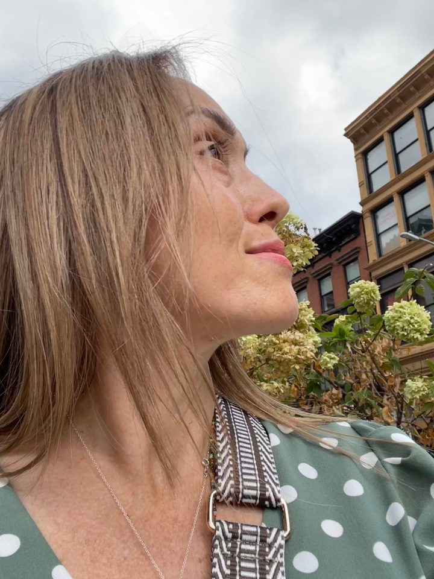
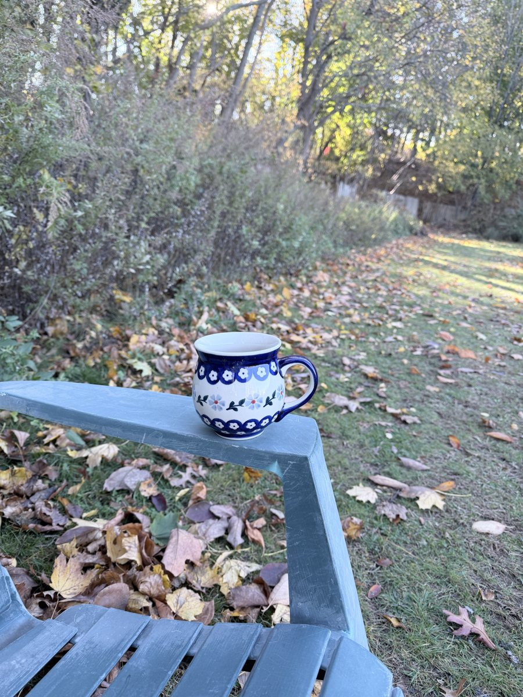

a spoonful of me · Saltanat Kamillya M.

looking up, New York

my Sunday morning
I put a little bit of everything in one notebook: who I am, the theater, opera and films that stayed with me, my research, and my writing, from The Wind Girl to my standards for life in New York 📓 Come in, take a spoonful, stay as long as you like ☕️
By day, I work in regulatory compliance in markets and exchanges, and I still do. Everything you see here, the research, the stories and this notebook itself, I make in my free time. Some people spend the evening binge-watching a show or a game; I spend mine on data and stories 🎬📊
The views and research on this site are my own and do not represent my employer.
I'm a coordinator at heart: I like turning scattered data and scattered people into one clear picture.
Writing stories led me to models and analysis. A model is a story too, with characters, turning points and outliers, only told in numbers. It is still about people, and about how they live with the systems around them.
always glad to meet people in AI, analytics, higher education and workforce planning
if this touched you, leave a heart 🤍
tap as many times as you like
thank you, your note reached me 🤍